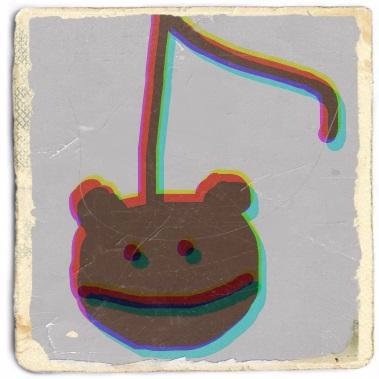

Mobile App Engineer @ Yahoo Japan Corporation.
I'm an iOS/Android app developer.
I'm a member of organizers of Bonfire iOS, which is a meetup for iOS app developers.
I love coding, internet culture, music (post-rock, Japanese Alternative Rock, electronica ...), illustration, manga.